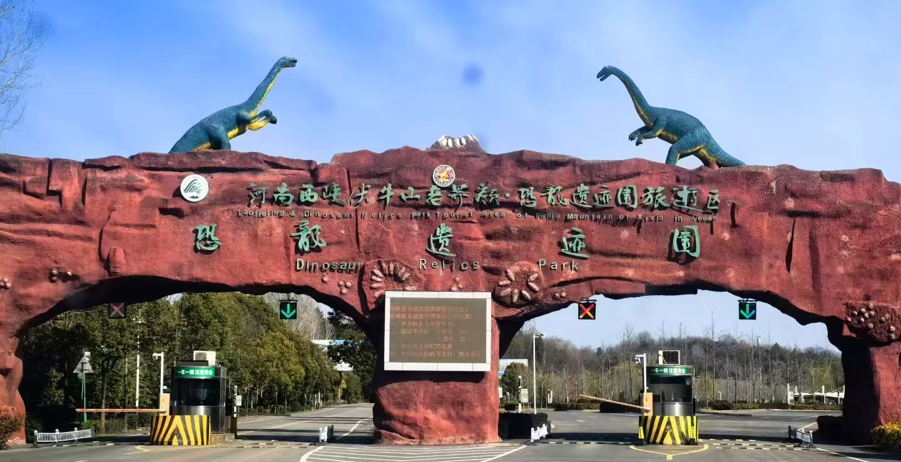
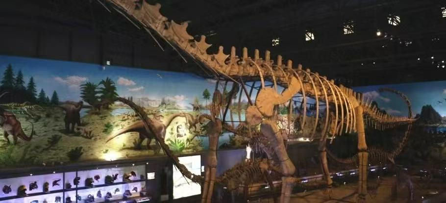

西峡恐龙遗址园位于河南省南阳市西峡县丹水镇，是国家5A级旅游景区、世界地质公园核心园区，以大规模恐龙蛋化石群闻名世界。这里是中国发现面积最大、数量最多、保存最完整的恐龙蛋化石产地，被誉为“世界第九大奇迹”。
景区融合史前地质遗迹、恐龙科普、亲子游乐、研学观光于一体，拥有化石博物馆、遗迹展馆、动态恐龙园、地质科普长廊等多元景观，既能探秘远古恐龙文明，又能了解地质演变历史，是中原地区亲子游玩、科普教育、研学旅行的热门目的地。

📍 地址：河南省南阳市西峡县丹水镇恐龙遗迹园风景区
🎫 门票：成人通票含各大展馆；学生凭学生证享半价优惠，60岁以上老人、1.4米以下儿童、现役军人、残疾人等凭证免门票
⏰ 开放时间
旺季（4月—10月）08:00-18:00，淡季（11月—3月）08:30-17:30，全年正常开放
🚗 交通指南
🍜 当地特色美食
经典一日游：景区入口 → 恐龙蛋化石博物馆 → 遗迹保护馆 → 仿真恐龙园 → 科普广场 → 返程。
研学深度游：Day1 参观化石展馆、地质科普学习；Day2 体验互动项目、恐龙主题园区打卡，适合学生团体出行。
1. 化石展馆内严禁触摸、敲打展品，文明参观，保护珍贵史前遗迹。
2. 园区户外区域较大，夏季做好防晒，春秋备好饮水，轻松游览。
3. 带儿童游玩需全程看护，避免在仿真恐龙设施处追逐打闹。
4. 建议跟随讲解参观，深入了解恐龙化石成因与远古地质知识。
5. 节假日研学团队较多，建议错峰入园，提升游览舒适度。
6. 景区路面平缓无障碍，老人、儿童游玩整体轻松无压力。
春季气候温和，草木清新，适合亲子踏青与研学出游；夏季山林凉爽，室内展馆舒适，避暑游玩两不误；秋季秋高气爽，空气清新，户外游览体验极佳；冬季人流量少，参观展馆安静舒适，适合静心科普学习。